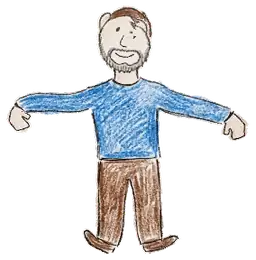
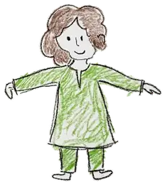
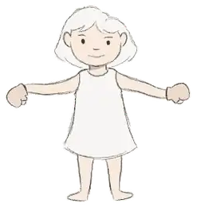
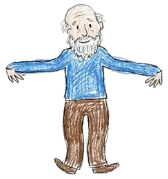
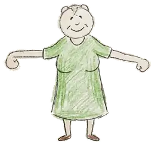
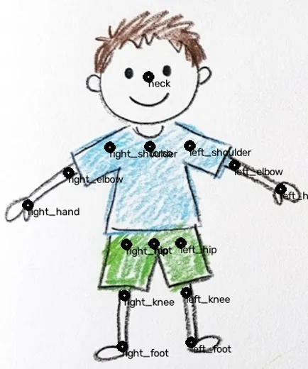
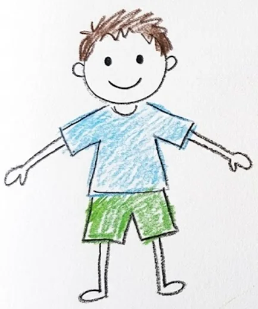
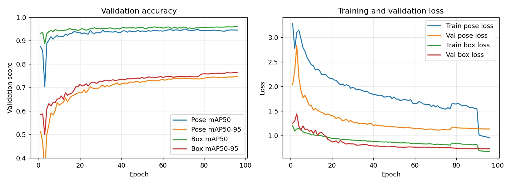

Upload
A teacher or child takes a photo of the drawing and uploads it.
Story StudioA classroom platform that finds the person in a child's paper drawing, gives it a skeleton, and animates it into stories and six learning games. The AI runs on the school's own computer, with no generative-AI services and no API keys.
drawn on paper…
 Rahim
Rahim
Father
Mother
Sister
Grandpa
GrandmaThe cast of "Rahim's Family": six drawings, each animated by EduVision's own pipeline.
These are real outputs from the pipeline for one drawing. No pixel is invented: the animated character is the child's own drawing, bent by a skeleton.
A teacher or child takes a photo of the drawing and uploads it.
Story Studio
Our own pose model, trained on children's drawings, finds the figure and 17 keypoints.
YOLOv8n-pose · best.pt
A hybrid mask, combining U²-Net with pen-line detection, separates the figure from the paper.
rembg + OpenCV
In the Fixer, a teacher can move joints or erase marks. A triangle mesh is then pinned to the skeleton.
Fixer · Delaunay meshMotion-capture data moves the skeleton, and ARAP bends the drawing naturally.
AnimatedDrawings · ARAP
The same rigged character can play any motion in the BVH motion library. Pick one:

docs/assets/screenshots/demo-video.pngAdmins, teachers, parents and students each see what they need. Young children log in by tapping their avatar, so they don't need to type.

assets/screenshots/story-studio.pngUpload six family drawings, check them in the Fixer, and get a narrated 9-scene story video starring your own characters.

assets/screenshots/activity-center.pngSix learning games for colours, counting, puzzles and number order, all using animated drawn characters as rewards.

assets/screenshots/portal.pngAdmins enrol classes, teachers assign activities and see scores, and parents watch their own child's progress and stories.
Every game uses characters from the same engine, in one of three ways.
The family GIFs, made by the full pipeline with the custom pose model, are used directly.
Six solid-colour figures, rigged with a template skeleton and pre-rendered.
The child's own colouring or photo is animated on the spot by the engine.
All numbers come from the trained model file or from a benchmark script in the repository that you can run again (RTX 2050 laptop, 27 November 2026).

best.pt: 96 epochs on Google Colab.The first plan used a cloud generative-AI API. We dropped it for three reasons, each backed by evidence in the docs.
The Gemini API's terms require users to be 18 or older, and don't allow services likely to be used by under-18s. Our users are kindergarten children.
Children's drawings, photos and videos are processed on the school's own computer. Free API tiers may use uploads to improve the provider's products.
Estimated cost per class per year for a video-generation API (30 children, 40 weeks).
Plus: the child recognises their own drawing, because nothing is regenerated. Read the full reasoning and pricing →
One double-click on start-eduvision.bat starts everything on a single Windows laptop.
Proofs, metrics, design decisions and limitations, plus a textbook that records how the project developed.
EduVision is open source. Explore the code, read the docs, or run it on your own machine.